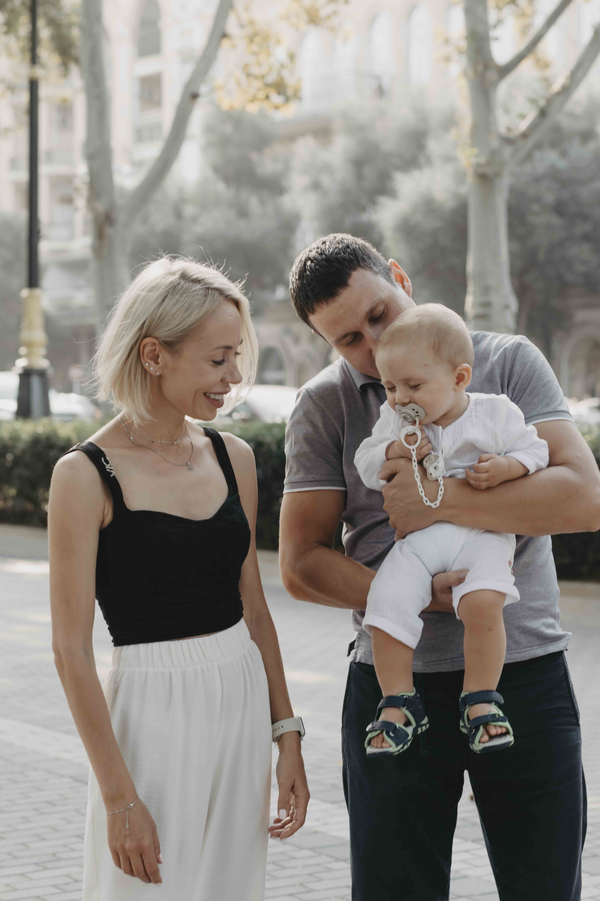
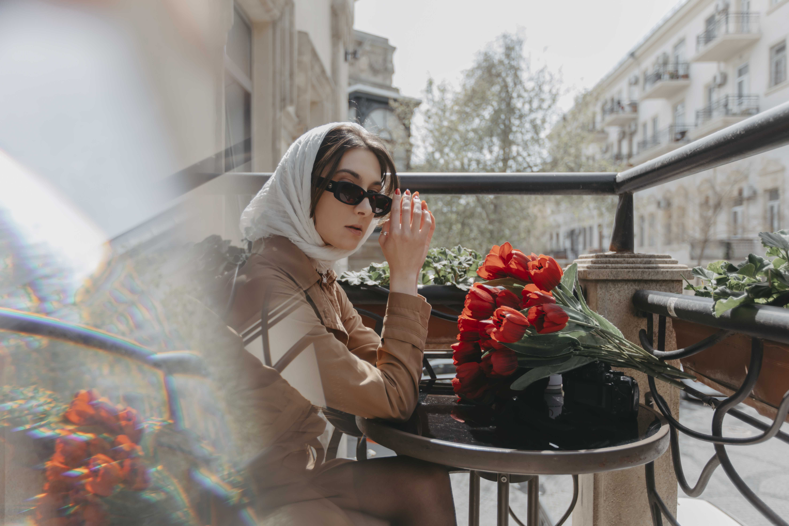
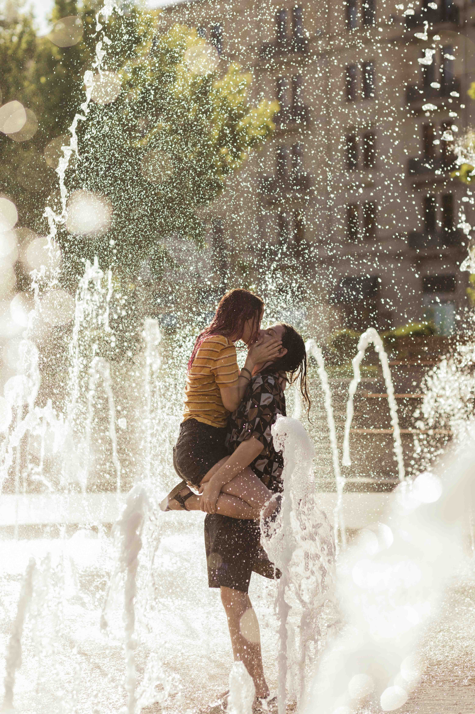
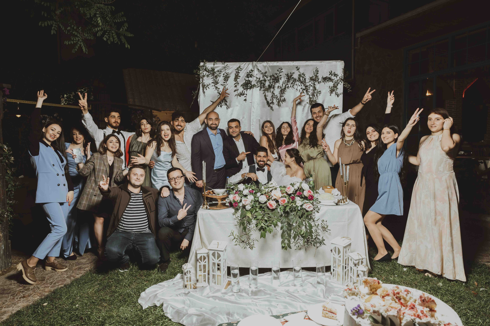
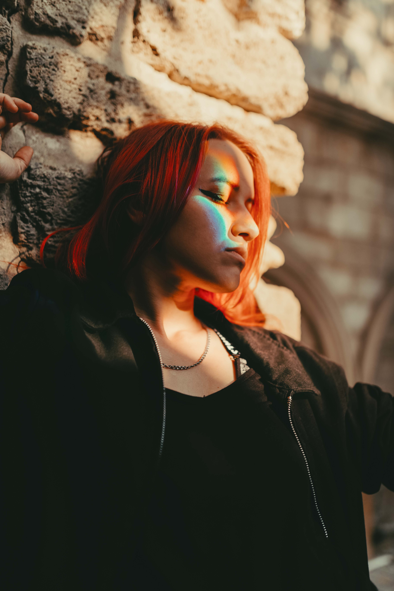
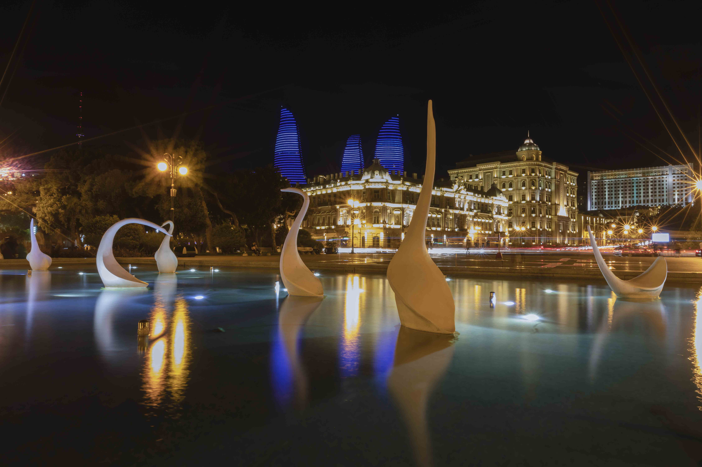
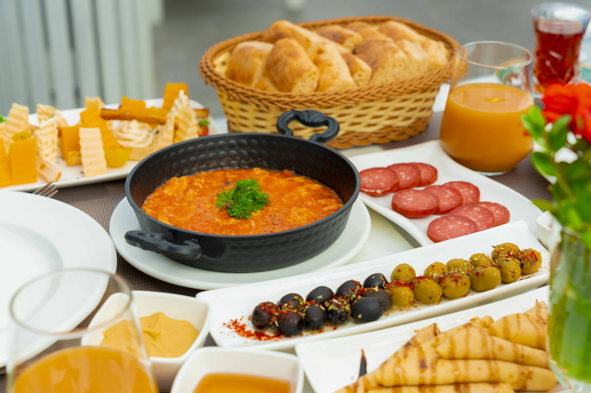
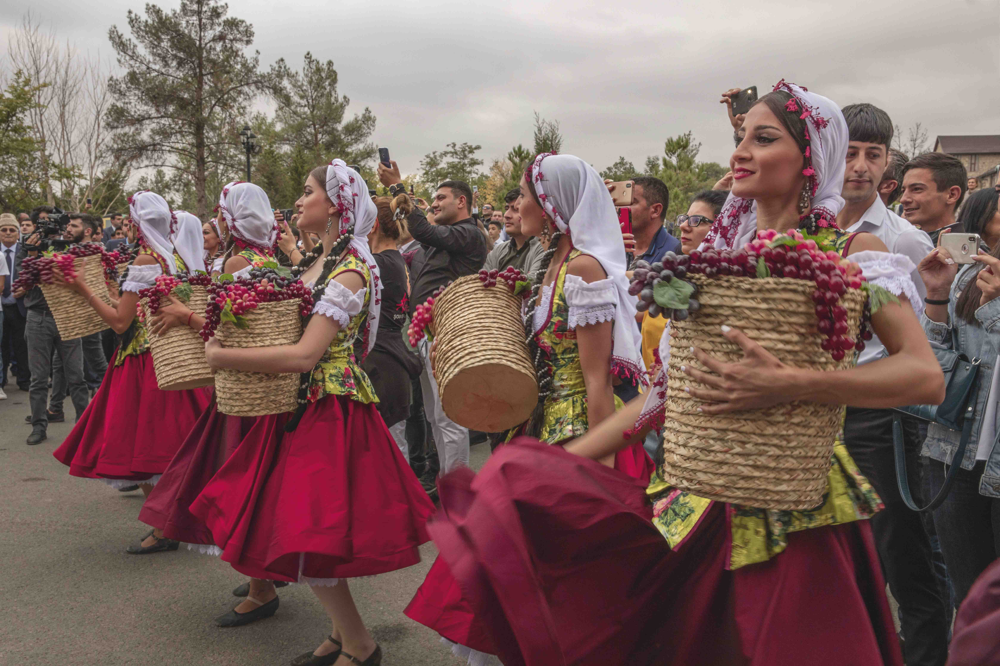

Family /adventure
Семейная фотография.
В семейной фотографии запечатлевается все самое дорогое, что есть в семье. И если вы хотите
сохранить эти воспоминания, то вам просто необходимо обратиться к профессиональному фотографу.
Fashion / Promo
Фешн-съемка
Фешн-съемка включает в себя съемку для каталога, рекламы, портфолио, бьюти-съемки. Фешн-фотография— жанр фотографии, связанный с демонстрацией модной одежды и других аспектов индустрии моды. Яркая, скандальная, провокационная, разноплановая и элегантная фэшн съемка воплощает мечты о стиле, гламуре и индивидуальности


Love story / Couples
Love story - фотография
В последнее время очень популярными становятся love story. Съемка love story поможет провести незабываемое время вместе с любимым человеком и запечатлеть эти моменты навсегда.
Wedding / betrothal
Свадебная фотография
Сейчас услуги свадебных фотографов предлагают многие компании, но наиболее качественные снимки можно сделать только в том случае, если вы обращаетесь к профессионалу. Мастер своего дела всегда сумеет найти наилучший ракурс, найти наиболее удачный свет.


Portrait / Solo
Портретная фотография
Портретная фотография включает в себя: — фотосъемку в студии или на натуре; — обработку фотографий с использованием профессиональных фотоэффектов. Портретная фотография — это отличный способ подчеркнуть свою индивидуальность, это фотосъемка, которая дает возможность раскрыть характер человека и передать его настроение, эмоции и чувства.
Nature / City
Съемка природы и ландшафты
Природа очень красива и разнообразна. И если рассматривать ее с этой точки зрения, то можно увидеть множество картин, которые невозможно описать словами. Каждый человек видит их по-своему. Но если попытаться понять природу, можно стать ее частицей. С помощью нее можно создать свой собственный мир, где будут царить гармония и красота.


Food / Products
Production photography
Кафе, кондитерские, бургерные, пекарни, службы доставки еды, производители продуктов питания и даже соусы, и специи нуждаются в фотографиях. Основная задача фуд-фото — разбудить аппетит и желание попробовать блюдо
Graduation / School
Фотосессия на выпускной
Это знаменательное событие, которое должно запомниться на всю оставшуюся жизнь для самих выпускников, так и для их родителей. Фотографии сделанные на выпускном запомнятся всем, кто в нем участвовал, надолго.

Reportage / Films
Репортажная фотосъемка
Репортажная фотосъемка — это съемка людей или событий в реальном времени. Фотограф снимает репортаж с места события, например, с открытия выставки, концерта, театра, спортивного мероприятия, презентации, свадьбы или другого значимого события.
© 2022 Bagirov by DAKER